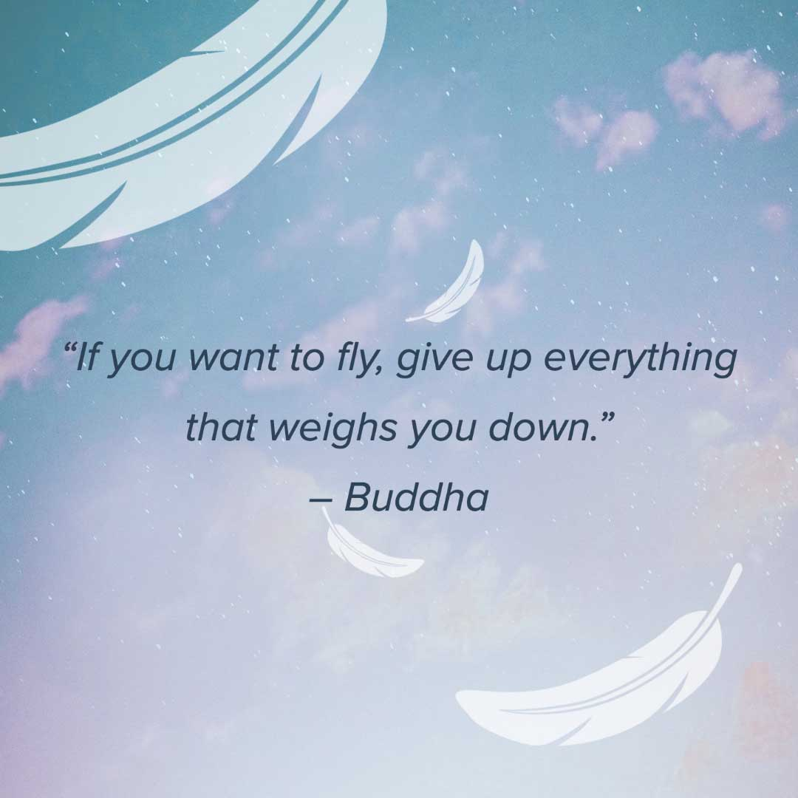

Motivation is the reason or resons that one has for doing something in your life
OR we can assume that Motivation is the synonym word of Dream or Dreaming so knowing how to be motivational preson can help to reach to your dreams
Start dreaming cause everything start whit a dream and Dreaming is just like siting a goal to your personal life so by having and following them you can reach to them.
by having courage you can do anything you want and have the dare to tyr new things be flexible in any situation also by thinking clearly and well about things you can reach to your dreams
Challenge means: (take part in a contest or competition, especially a dual). Never afrid of breaks cause breaks are the main reason of success and try to beat the breaks to becoming a winner it's also a kind of struggle which make you a fighter(combative)
-You may be confused that how you to do it?
you might hear this saying that "it's the world most enjoybl feeling when you do something that others say you can't".
so if someone is going to dicourage you that you are not able to do it don't feel sad try to turn that sad feeling and vibe into the good one do your beast to make it happen & show them Get out there and work for it and never regret.
"" stand up for yourself because no can do it the way that you do" Sadaf sarwari
"Try to upgrad your self insted of downgrading others" Sadaf sarwari
"I'm not a Princess even a Queen i'm just a simple girls with my own kingdom" Sadaf sarwari
"care about people who cares about you and worth everyone as the way they are" Sadaf sarwari
"You can't visulazie me because i'm out of your imagine" Sadaf sarwari
"Everything start with a dream" Sadaf sarwari
"having aim in your life is the weapon that help you to reach to your dream life " Sadaf sarwari
"You are the sun of your life you can light your world " Sadaf sarwari
"Success is not about gaining money its about "
“Everyone has inside them a piece of good news. The good news is you don’t know how great you can be! How much you can love! What you can accomplish! And what your potential is.” Anne Frank
“Some luck lies in not getting what you thought you wanted but getting what you have, which once you have got it you may be smart enough to see is what you would have wanted had you known.” Garrison Keillor
“Don’t quit yet, the worst moments are usually followed by the most beautiful silver linings. You have to stay strong, remember to keep your head up and remain hopeful.” Unknown
“When written in Chinese the word “crisis” is composed of two characters – one represents danger and the other represents opportunity.” John F Kennedy
“Good. Better. Best. Never let it rest. ‘Til your good is better and your better is best.” – St. Jerome.
“In the middle of every difficulty lies opportunity.” Albert Einstein
H.O.P.E. = Hold On. Pain Ends.
Make each day your masterpiece. John Wooden
“Wherever you go, go with all your heart” Confucius
“Turn your wounds into wisdom” Oprah
“We can do anything we want to if we stick to it long enough.” Helen Keller

“Success is liking yourself, liking what you do, and liking how you do it.”Maya Angelou
“Every champion was once a contender that didn’t give up.” Gabby Douglas
“To be a champion, I think you have to see the big picture. It’s not about winning and losing; it’s about every day hard work and about thriving on a challenge. It’s about embracing the pain that you’ll experience at the end of a race and not being afraid. I think people think too hard and get afraid of a certain challenge.” Summer Sanders
“The difference between successful people and very successful people is that very successful people say ‘no’ to almost everything.” Warren Buffett
You can cry, scream, and bang your head in frustration but keep pushing forward. It’s worth it.
“I hated every minute of training, but I said, ‘Don’t quit. Suffer now and live the rest of your life as a champion.” Muhammad Ali
“Opportunities don’t happen. You create them.” Chris Grosser
“On my own I will just create and if it works, it works. And if it doesn’t, I’ll just create something else. I don’t have any limitations on what I think I could do or be.” Oprah Winfrey
“We realize the importance of our voices only when we are silenced.” Malala Yousafzai
“We need to accept that we won’t always make the right decisions, that we’ll screw up royally sometimes – understanding that failure is not the opposite of success, it’s part of success.” Arianna Huffington
“Don’t compromise yourself. You’re all you’ve got.” Janis Joplin
“When something I can’t control happens, I ask myself: Where is the hidden gift? Where is the positive in this?” Sara Blakely
“Doubt is a killer. You just have to know who you are and what you stand for. “ Jennifer Lopez
“Be a first rate version of yourself, not a second rate version of someone else.” Judy Garland
“Learn from the mistakes of others. You can’t live long enough to make them all yourself.” Eleanor Roosevelt
“The best time to plant a tree was 20 years ago. The second best time is now.” Chinese Proverb
“Only the paranoid survive.” Andy Grove
“It’s hard to beat a person who never gives up.” Babe Ruth
“I wake up every morning and think to myself, ‘how far can I push this company in the next 24 hours.’” Leah Busque
“If people are doubting how far you can go, go so far that you can’t hear them anymore.” Michele Ruiz
“We need to accept that we won’t always make the right decisions, that we’ll screw up royally sometimes – understanding that failure is not the opposite of success, it’s part of success.” Arianna Huffington
“Be happy with what you have while working for what you want.” Helen Keller
“Sunshine all the time makes a desert.” Arabic Proverb
“The big lesson in life is never be scared of anyone or anything.”Frank Sinatra
“You can’t let your failures define you. You have to let your failures teach you.” Frank Sinatra
Barack Obama
“Success is a lousy teacher. It seduces smart people into thinking they can’t lose.” Bill Gates
“Stop being afraid of what could go wrong, and start being excited about what could go right.” Tony Robbins
“Think like a Queen. A Queen is not afraid to fail. Failure is another stepping stone to greatness.” Oprah
“Defeat is a state of mind; no one is ever defeated until defeat is accepted as a reality.” Bruce Lee
“Our greatest glory is not in never falling, but in rising every time we fall.” Confucius
“It is impossible to live without failing at something, unless you live so cautiously that you might as well not have lived at all – in which case, you fail by default.” J.K. Rowling
“Success is going from failure to failure without losing your enthusiasm” Winston Churchill
“Why do we grieve failures longer than we celebrate wins?” Komal Kapoor
“Failure isn’t the end of the road. It’s a big red flag saying to you ‘Wrong way. Turn around.’” Oprah Winfrey
Whenever you feel like a failure, just remember that even Coca Cola only sold 25 bottles their first year